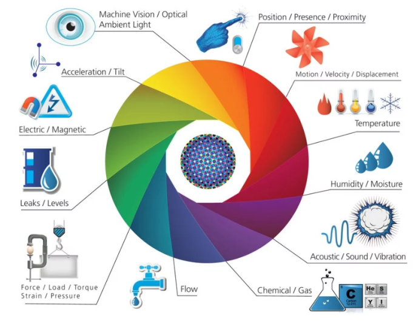
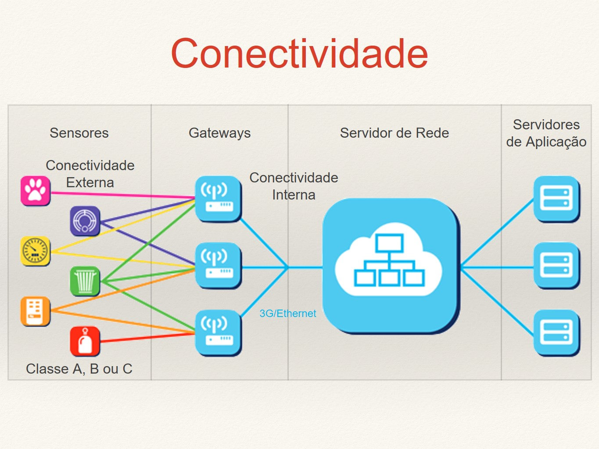
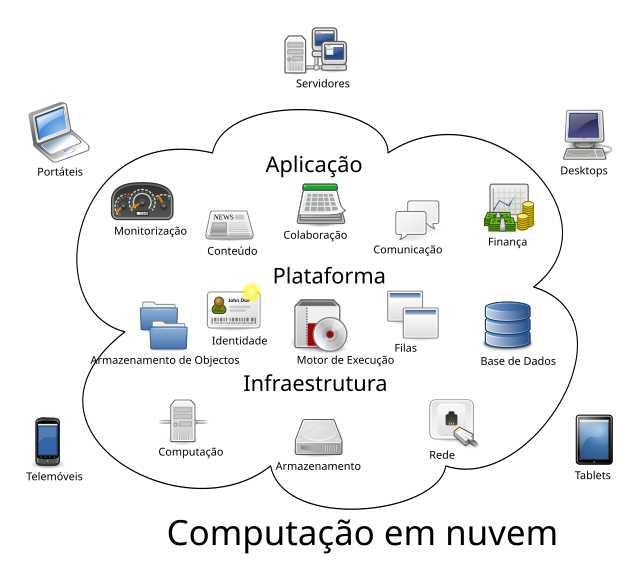

Descubra as inovações que possibilitam a Internet das Coisas
Sensores capturam informações do ambiente, como temperatura, umidade e movimento. Atuadores, por sua vez, executam ações físicas em resposta aos dados, como abrir uma porta ou ajustar a iluminação. Essa combinação possibilita a interação entre o mundo digital e físico, tornando a IoT uma tecnologia funcional e responsiva.
A conectividade é essencial para a comunicação entre dispositivos IoT. Tecnologias como Wi-Fi, Bluetooth, 5G e redes de longo alcance (LoRa, NB-IoT) garantem a troca de dados. A escolha da tecnologia depende da aplicação, alcance e quantidade de dados necessários, possibilitando desde redes locais até operações em larga escala.
A computação em nuvem permite o armazenamento e processamento de grandes volumes de dados gerados por dispositivos IoT. A nuvem viabiliza o acesso remoto, facilita o gerenciamento de dados e possibilita a análise em tempo real, crucial para monitoramento e tomada de decisões rápidas.
A IoT gera enormes volumes de dados que precisam ser interpretados. Tecnologias de Big Data e IA possibilitam a análise de grandes quantidades de informações, identificando padrões e facilitando a previsão de eventos. Essas análises permitem automação e decisões mais inteligentes e eficientes em tempo real.